| age | workclass | fnlwgt | education | education_num | marital_status | occupation | relationship | race | sex | capital_gain | capital_loss | hours_per_week | native_country | income | |
|---|---|---|---|---|---|---|---|---|---|---|---|---|---|---|---|
| 0 | 28 | Private | 319768 | Masters | 14 | Married-civ-spouse | Sales | Husband | White | Male | 0 | 0 | 45 | France | >50K |
| 1 | 60 | Private | 120067 | 9th | 5 | Married-civ-spouse | Farming-fishing | Husband | White | Male | 0 | 0 | 45 | United-States | <=50K |
| 2 | 43 | Private | 211517 | Some-college | 10 | Never-married | Adm-clerical | Not-in-family | White | Male | 0 | 1669 | 45 | United-States | <=50K |
| 3 | 35 | State-gov | 210866 | HS-grad | 9 | Married-civ-spouse | Other-service | Husband | White | Male | 0 | 0 | 40 | United-States | <=50K |
| 4 | 36 | Private | 320811 | Some-college | 10 | Married-civ-spouse | Craft-repair | Husband | White | Male | 0 | 0 | 40 | United-States | >50K |
AutoML
Data-Centric AI (Module II)
Matteo Francia
DISI — University of Bologna
m.francia@unibo.it
DISI — University of Bologna
m.francia@unibo.it

The Problem: Hyperparameter Optimization
A learning algorithm fits parameters (for example, regression coefficients) from data.
Hyperparameters configure that fitting process: regularization strength, tree depth, or learning rate.
Hyperparameter optimization is the process of finding the best set of hyperparameters. Given:
- Training data \(D_{\mathrm{tr}}\);
- A learning algorithm \(A\) and a target \(\mathcal L\);
- A hyperparameter search space \(\Lambda\).
It solves
\[\lambda^* \in \arg\min_{\lambda\in\Lambda} f(\lambda), \qquad f(\lambda)=\mathcal{L}_{D_{\mathrm{val}}}\!\left(A_\lambda(D_{\mathrm{tr}})\right).\]
Here \(\mathcal L\) is a validation loss; for classification accuracy we can minimize \(1-Accuracy\).
HPO as an Optimizer-Learning-System Loop
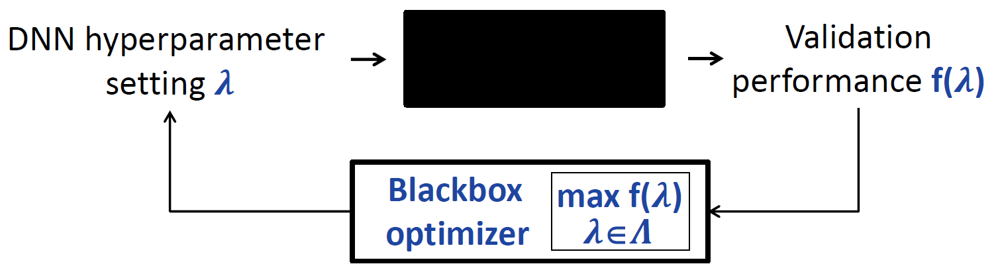
Optimizer proposes a configuration; the learning system trains and validates it and returns a loss. Source: Hutter and Vanschoren AutoML tutorial.
The learning system fits model parameters.
- E.g., Neural network: connection weights and biases.
The optimizer changes hyperparameters: the distribution and bounds encode assumptions.
- E.g., Neural network: layers, activation functions, learning rate.
- Choose target, metric, and hyperparameter ranges before running the optimizer.
- A poor search space can defeat any optimizer.
HPO as an Optimizer-Learning-System Loop
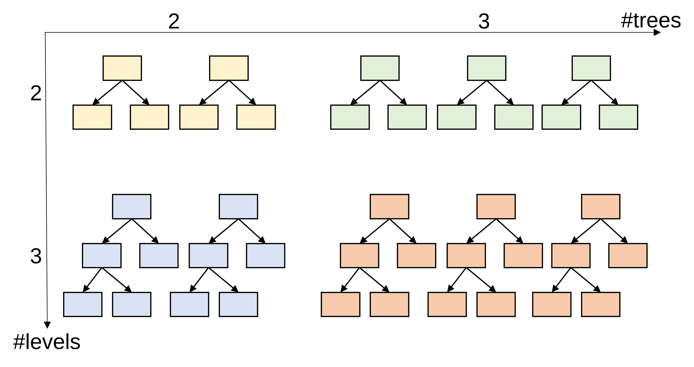
Example of a hyperparameter optimization loop.
Get the Dataset
Adult Census Income is downloaded directly from the UCI repository, without OpenML.
Dataset: (Becker and Kohavi 1996).
Get the Dataset
<class 'pandas.DataFrame'>
RangeIndex: 8000 entries, 0 to 7999
Data columns (total 15 columns):
# Column Non-Null Count Dtype
--- ------ -------------- -----
0 age 8000 non-null int64
1 workclass 8000 non-null str
2 fnlwgt 8000 non-null int64
3 education 8000 non-null str
4 education_num 8000 non-null int64
5 marital_status 8000 non-null str
6 occupation 8000 non-null str
7 relationship 8000 non-null str
8 race 8000 non-null str
9 sex 8000 non-null str
10 capital_gain 8000 non-null int64
11 capital_loss 8000 non-null int64
12 hours_per_week 8000 non-null int64
13 native_country 8000 non-null str
14 income 8000 non-null str
dtypes: int64(6), str(9)
memory usage: 937.6 KBSet the Target: Balanced Accuracy
income
<=50K 0.745
>50K 0.255
Name: target_share, dtype: float64For \(C\) classes, balanced accuracy is the mean recall across classes:
- \(\mathrm{BA}=\frac{1}{C}\sum_{c=1}^{C}\frac{TP_c}{TP_c+FN_c}\)
- For binary classification this is \(\frac{\mathrm{sensitivity}+\mathrm{specificity}}{2}\).
A majority-only classifier can have high ordinary accuracy but balanced accuracy of 0.5 when both classes are present.
Fixed Random-Forest Baseline
Code
# Fit preprocessing once on training rows; every method receives these same arrays.
classification_preprocess = ColumnTransformer([
("num", StandardScaler(), numeric_cls),
("cat", OneHotEncoder(handle_unknown="ignore", sparse_output=False), categorical_cls),
])
X_train_model = classification_preprocess.fit_transform(X_cls_train)
X_val_model = classification_preprocess.transform(X_cls_val)
classification_baseline = RandomForestClassifier(
n_estimators=144,
max_depth=4,
min_samples_leaf=5,
max_features="sqrt",
class_weight="balanced",
random_state=RANDOM_STATE, n_jobs=1,
)
started = time.perf_counter()
classification_baseline.fit(X_train_model, y_cls_train)
baseline_elapsed = time.perf_counter() - started
classification_baseline_scores = evaluate_classifier(classification_baseline, X_val_model, y_cls_val)
comparison_rows = {"baseline": {
"method": "baseline", "classifier": type(classification_baseline).__name__,
"elapsed_s": baseline_elapsed, **classification_baseline_scores,
}}
pd.DataFrame(comparison_rows.values()).round(3)| method | classifier | elapsed_s | accuracy | balanced_accuracy | f1 | |
|---|---|---|---|---|---|---|
| 0 | baseline | RandomForestClassifier | 0.304 | 0.729 | 0.778 | 0.623 |
Grid Search: Enumerate a Cartesian Product
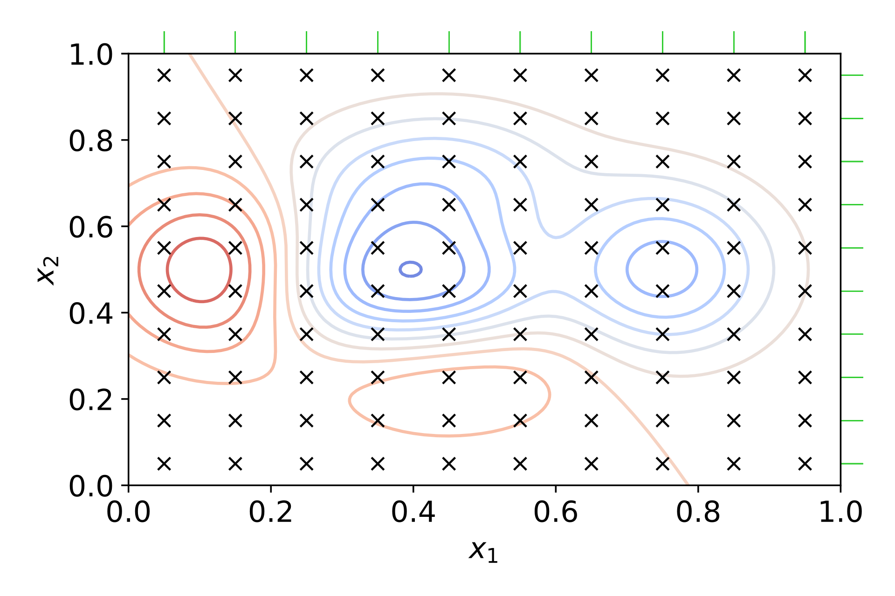
Grid search
Grid Search: Enumerate a Cartesian Product
For each of \(d\) hyperparameters, choose a set of values \(X_j\).
Grid search evaluates \(N_{\mathrm{grid}}=\prod_{j=1}^d |X_j|\) configurations.
For a random forest, 4 depths × 3 leaf sizes × 5 tree counts means 60 candidates, or 300 fits with 5-fold CV.
- Resolution is fixed by the grid: values between grid points are never tried.
- Adding an unimportant dimension multiplies the work.
Random Search: Sample Configurations
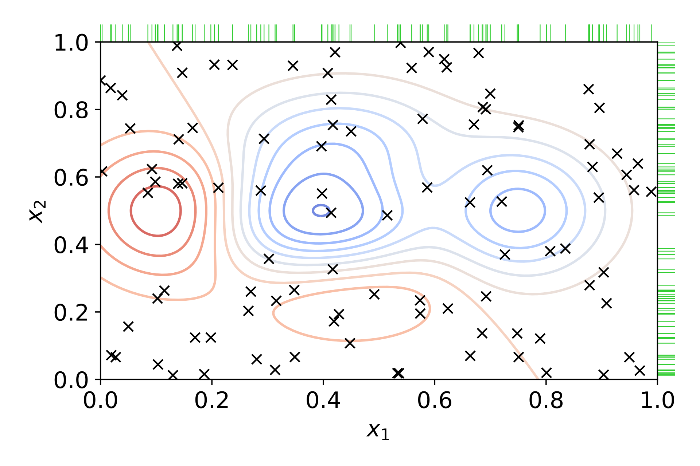
Random search
Random Search: Sample Configurations
Choose a sampling distribution \(p(\lambda)\), draw and evaluate \(N_{rnd}\) independent configurations.
\[\lambda_1,\ldots,\lambda_{N_{rnd}}\sim p(\lambda),\qquad \widehat\lambda\in\arg\min_{\lambda_i}\widehat f(\lambda_i).\]
Answer
Independent trials can be parallelized. Previous evaluations are ignored, so the search may waste time in unpromising regions.param_random = {
"max_depth": randint(2, 25),
"min_samples_leaf": randint(1, 21),
}
RandomizedSearchCV(rf_estimator, param_random, n_iter=9, cv=holdout, scoring="balanced_accuracy", random_state=RANDOM_STATE)It does not use earlier scores to propose later candidates. Pros? Cons?
Why Can Random Search Work Well?
If only one of two hyperparameters matters, a 3 × 3 grid spends nine trials on only three values of the important parameter.
- Nine random samples could explore nine distinct values of each hyperparameter.
- The advantage grows when a high-dimensional space has only a few influential dimensions.
Let a useful region have probability mass \(p\). With independent trials (Bergstra and Bengio 2012)
\[P(\text{at least one useful configuration in }N\text{ trials})=1-(1-p)^N.\]
- For \(p=0.05\), 59 trials give about a 95% chance of hitting that region.
- This is not a guarantee of generalization or of finding the global optimum.
Why Can Random Search Work Well?
The probability depends on the region’s mass under the sampling distribution.
| Independent trials | Hit a region of mass 5% | Hit a region of mass 1% |
|---|---|---|
| 20 | 64% | 18% |
| 60 | 95% | 45% |
| 300 | >99.9% | 95% |
The example depends strongly on the first coordinate. Compare a fixed nine-point grid with 1,000 repetitions of nine random trials.
Grid (9 trials, 3 distinct l1 values): loss = 0.803. Random (9 trials, 9 distinct l1 values): median loss = 0.096
Random search beats the grid in 98% of the repetitions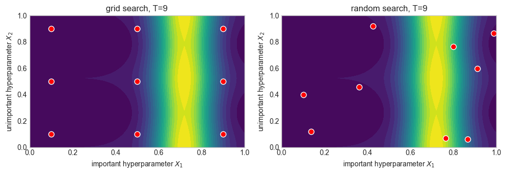
Example: Four-Parameter Random Forest
param_grid = {
"max_depth": [2, 4], "min_samples_leaf": [16, 24], "max_features": [0.15, 1.0], "max_samples": [0.5, 1.0],
}
param_random = {
"max_depth": randint(2, 5), "min_samples_leaf": randint(1, 25), "max_features": uniform(0.15, 0.85), "max_samples": uniform(0.5, 0.5),
}| method | classifier | elapsed_s | evaluations | search_trees | accuracy | balanced_accuracy | f1 | |
|---|---|---|---|---|---|---|---|---|
| 0 | grid | RandomForestClassifier | 10.0406 | 16 | 2304 | 0.7625 | 0.8043 | 0.6558 |
| 1 | random | RandomForestClassifier | 10.9838 | 18 | 2592 | 0.7688 | 0.8069 | 0.6606 |

From HPO to AutoML
Automated Machine Learning (AutoML) automates choices when building and evaluating an ML solution.
- While HPO fixes the learning algorithm and tunes its settings, AutoML can also choose the algorithm and parts of the pipeline.
- The user defines the task, search space, metric and budget.
CASH: Combined Algorithm Selection and Hyperparameter Optimization
Let \(\mathcal A=\{A_1,\ldots,A_M\}\) be candidate algorithms and \(\Lambda_a\) the hyperparameter space of \(A_a\). The CASH problem (Thornton et al. 2013) is
\[ (a^*,\lambda^*)\in\arg\min_{a\in\{1,\ldots,M\},\;\lambda\in\Lambda_a} \mathcal L_{D_{\mathrm{val}}}\!\left(A_{a,\lambda}(D_{\mathrm{tr}})\right). \]
CASH jointly selects the algorithm and its hyperparameters under a resource budget.
- Its domain is a conditional union \(\bigcup_a\{a\}\times\Lambda_a\), rather than one rectangular grid.
- A root hyperparameter selects the learner, activating only its associated space \(\Lambda_a\).
- E.g., A forest activates tree-related settings; logistic regression activates regularization settings.
CASH Search Spaces Are Conditional
The hyperparameter space is a conditional tree or graph, not a Cartesian product of every learner’s settings.
| Learner selected at the root | Active hyperparameters |
|---|---|
| Random forest | tree count, tree/leaf constraints |
| Logistic regression | penalty and regularization strength |
| Gradient boosting | learning rate, iterations, tree constraints |
CASH inherits HPO’s expensive evaluations and adds learner-level allocation: which algorithm deserves the next unit of budget?
- Different learners and configurations have different costs; the answer should depend on observed quality, cost, and remaining resources.
Search Under a Budget
The Budget Is Part of the Problem
Budget:
- A trial/instance/configuration budget limits the number of candidates.
- A time budget limits elapsed time (include preprocessing and search overhead).
They are different: a deep forest can cost much more than a small linear model.
For a sequential search history \(H_N\) a simplified resource constraint is \(\sum_{i=1}^N c(A_{\lambda_i},r_i)+c_{\mathrm{overhead}}\le B.\)
Here \(r_i\) is fidelity, \(c\) is cost, and \(B\) is the total budget.
- The optimizer chooses what to evaluate, at what fidelity (i.e., resource level; for example, sample size or epochs), and when to stop.
- Compare methods with the same data, metric, hardware, and resource accounting. Why?
Bayesian Optimization: Choose the Next Configuration
Random search ignores completed trials. Bayesian optimization uses their results to choose what to try next (Snoek et al. 2012).
- A surrogate predicts validation loss and uncertainty for untested configurations.
- An acquisition function balances exploiting promising regions and exploring uncertain ones.
- Evaluate a configuration → update the surrogate → propose the next configuration → repeat until the budget is exhausted.
The surrogate can be a machine learning model, such as a random forest as in SMAC (Hutter et al. 2011).
- It predicts configuration quality, rather than the dataset’s target.
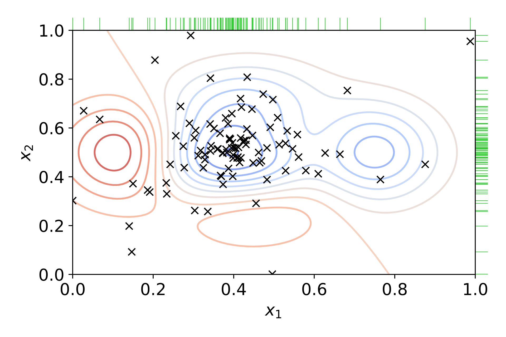
Bayesian Optimization: Surrogate and Next Evaluation
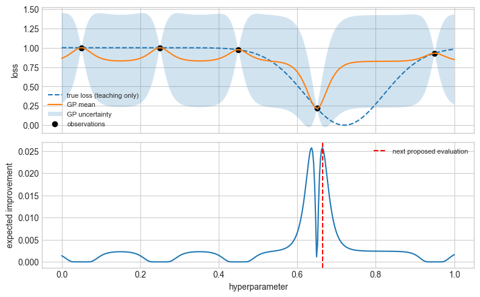
Successive Halving: Allocate Resources
Choosing a configuration is one decision, deciding how much resource to spend evaluating it is another.
Fidelity is the resource level: for example, fewer training rows or epochs give a cheaper evaluation.
- Successive halving increases resources for the surviving candidates (Jamieson and Talwalkar 2016).
| Round | Candidates | Resource per candidate | Total resource |
|---|---|---|---|
| 0 | 18 | 16 trees | 288 trees |
| 1 | 6 | 48 trees | 288 trees |
| 2 | 2 | 144 trees | 288 trees |
Hyperband: Vary the Starting Allocation
Successive halving fixes the starting allocation: the number of candidates and their initial resource.
- Hyperband varies that tradeoff across several halving brackets (Li et al. 2018).
- Start many candidates cheaply, or fewer candidates with more resources each.
- Low-fidelity rankings can be misleading: a model that learns slowly may be discarded too early.
- Low fidelity is useful when it preserves enough of the high-fidelity ranking.
- … It can also discard slow-starting or data-hungry models.
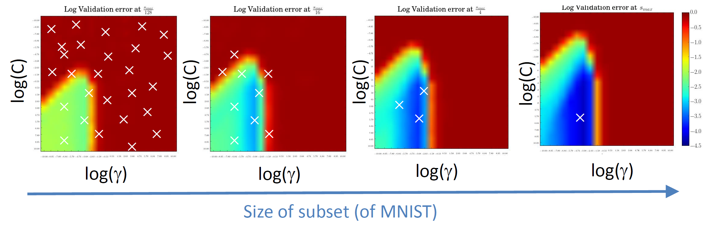
SVM validation error at increasing MNIST sample sizes. Source: Hutter and Vanschoren AutoML tutorial.
Multi-Fidelity and Combined Search
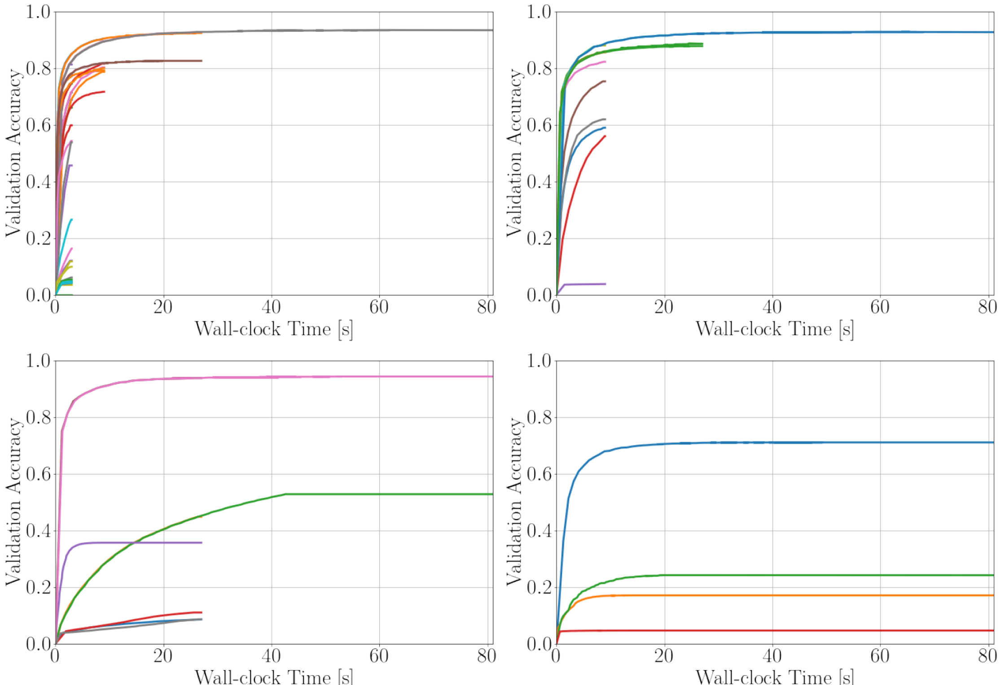
SVM validation error at increasing MNIST sample sizes. Source: Hutter and Vanschoren AutoML tutorial.
Demo: Successive Halving on the Same Random Forest Space
Compare 18 initial configurations on the same training/validation rows.
- Halving allocates trees over three rounds:
- Increase tree count: 16 → 48 → 144.
- Retain approximately one third: 18 → 6 → 2 candidates.
- Random search gives every candidate 144 trees.
Code
halving = HalvingRandomSearchCV(
rf_estimator, param_random, n_candidates=N_RANDOM, factor=3,
resource="n_estimators", min_resources=16, max_resources=RF_TREES,
cv=holdout, scoring="balanced_accuracy", refit=False, n_jobs=1,
random_state=RANDOM_STATE, error_score="raise",
)
fit_search("halving", halving)| classifier | elapsed_s | evaluations | search_trees | accuracy | balanced_accuracy | f1 | |
|---|---|---|---|---|---|---|---|
| method | |||||||
| grid | RandomForestClassifier | 10.0406 | 16 | 2304 | 0.7625 | 0.8043 | 0.6558 |
| random | RandomForestClassifier | 10.9838 | 18 | 2592 | 0.7688 | 0.8069 | 0.6606 |
| halving | RandomForestClassifier | 5.6016 | 26 | 864 | 0.7688 | 0.8069 | 0.6606 |
Halving speedup over random: 1.96xBudget Questions
- How many configurations survived each halving round, and how many trees were fitted during search?
- How much runtime did halving save compared with evaluating the same candidates at full resource?
- What happened to validation balanced accuracy? Could an early ranking discard the eventual best candidate?
FLAML: Search and Resource Allocation
FLAML is an AutoML system that selects learners and hyperparameters under a budget (Wang et al. 2021).
- Configuration selection: like BO, it uses previous results (Wu et al. 2021).
- Resource allocation: like Hyperband, FLAML adapts resource allocation.
- Adjust training sample size.
- Allocate time across learners using observed cost and improvement.
Code
from flaml import AutoML
classification_automl = AutoML()
classification_started_at = time.perf_counter()
classification_automl.fit(
X_train=X_train_model, y_train=y_cls_train,
X_val=X_val_model, y_val=y_cls_val,
eval_method="holdout",
retrain_full=False,
task="classification", metric=flaml_balanced_accuracy,
time_budget=time_budget,
log_file_name=f"flaml_main_classification_balanced_accuracy_{time_budget}s.log", seed=RANDOM_STATE, verbose=1, n_jobs=1,
)
classification_elapsed = time.perf_counter() - classification_started_at
print(f"Selected learner: {classification_automl.best_estimator}; classifier: {type(classification_automl.model.estimator).__name__}")
print("Selected hyperparameters:", classification_automl.best_config)Selected learner: xgb_limitdepth; classifier: XGBClassifier
Selected hyperparameters: {'n_estimators': 151, 'max_depth': 5, 'min_child_weight': np.float64(1.782924838977797), 'learning_rate': np.float64(0.17989621506784795), 'subsample': 1.0, 'colsample_bylevel': np.float64(0.9328288706694938), 'colsample_bytree': np.float64(0.9877878456495247), 'reg_alpha': np.float64(0.005681262601785821), 'reg_lambda': np.float64(0.029377943595706977)}FLAML: Search and Resource Allocation
| classifier | elapsed_s | accuracy | balanced_accuracy | f1 | |
|---|---|---|---|---|---|
| method | |||||
| baseline | RandomForestClassifier | 0.3036 | 0.7288 | 0.7784 | 0.6226 |
| grid | RandomForestClassifier | 10.0406 | 0.7625 | 0.8043 | 0.6558 |
| random | RandomForestClassifier | 10.9838 | 0.7688 | 0.8069 | 0.6606 |
| halving | RandomForestClassifier | 5.6016 | 0.7688 | 0.8069 | 0.6606 |
| FLAML | XGBClassifier | 30.0064 | 0.8688 | 0.8238 | 0.7395 |
Inspect FLAML’s Conditional CASH Space
Code
Default learners for this run: ['lgbm', 'rf', 'xgboost', 'extra_tree', 'xgb_limitdepth', 'sgd', 'lrl1']Code
| hyperparameter | domain | init_value | low_cost_init_value | |
|---|---|---|---|---|
| 0 | n_estimators | [4, 2048] (_LogUniform) | 4.000000 | 4.0 |
| 1 | max_features | [0.09901475429766744, 1.0] (_LogUniform) | 0.099015 | NaN |
| 2 | max_leaves | [4, 2400] (_LogUniform) | 4.000000 | 4.0 |
| 3 | criterion | ['gini', 'entropy'] | NaN | NaN |
Anytime Performance Under a Budget
Define the incumbent curve for completed trials \(f^*(\tau)=\min\{f_i:t_i\le\tau\},\qquad \tau\le B.\)
- Each trial has a validation loss \(f_i\) and a completion time \(t_i\).
- The curve shows how quickly the optimizer finds better configurations.
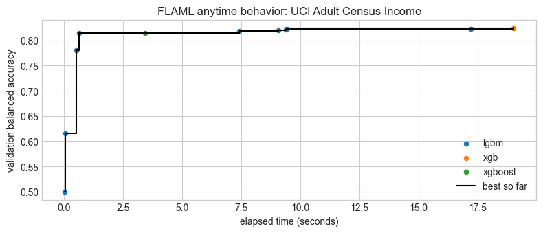
Increasing a budget changes the search opportunity.
- Tradeoff of validation quality and elapsed time: if two budgets give similar validation scores, is the extra compute time justified?
- A system that is excellent after two hours may not be the best choice for an interactive workflow that allows only two minutes.
From CASH to End-to-End Pipeline Optimization
So far, we fixed data cleaning, category encoding, feature availability, and validation design, then searched over learners.
End-to-end pipeline optimization also searches over the structure and operations that turn raw data into predictions.
Describe a pipeline using its conditional settings \(\theta\in\Theta_s\) and the steps \(\mathcal S(C)\) allowed by constraints \(C\).
\[ (s^*,\theta^*)\in\arg\min_{s\in\mathcal S(C),\;\theta\in\Theta_s} \widehat{\mathcal L}_{\mathrm{val}}\!\left(\operatorname{Fit}(P_{s,\theta},D_{\mathrm{tr}})\right), \qquad c_{\mathrm{search}}\le B. \]
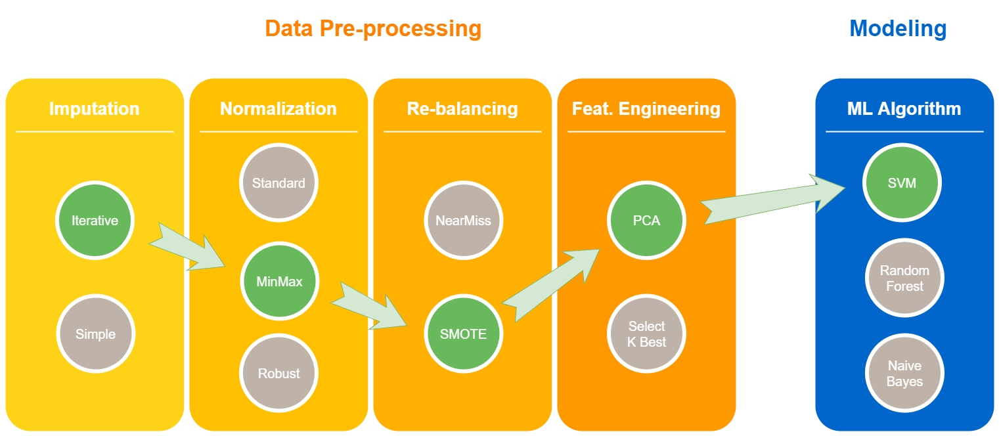
End-to-End Pipeline Optimization
Why Full Pipeline Search Is Harder
(Giovanelli et al. 2021) study transformations and combinations of transformations as pipeline prototypes.
- E.g., which step types are present and in which order.
- Unfortunately, no pipeline prototype is always best.
- Data quality: deletion, imputation, and feature construction can change who is represented and what the model learns.
- Constraints: accuracy competes with latency, fairness, interpretability, and resource limits; some pipelines are inadmissible even if accurate.
- Dependencies: scaling matters for some learners, not for others.
- …
- Exercise: discuss admissible orders for feature selection/resampling/imputation.
MLZero: Agents Build and Repair ML Workflows
(Fang et al. 2025) uses LLM-powered agents to automate workflows across data modalities.
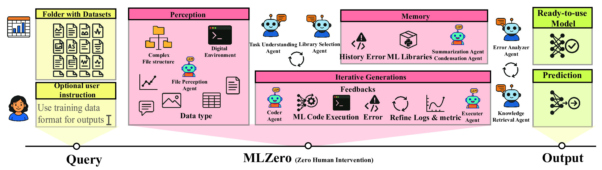
MLZero
- Agents generate code, execute it, inspect failures, and revise the workflow.
- Memory helps reduce hallucinated or outdated API calls:
- Semantic memory supplies reusable knowledge.
- Episodic memory retains earlier attempts and errors.
Wrap-Up
What AutoML Automates
AutoML can automate repetitive parts of modeling:
- trying candidate learners;
- allocating trials;
- tuning hyperparameters;
- returning a strong baseline.
What AutoML Does Not Automate
You still need to:
- define the problem and target;
- check for leakage;
- assess fairness;
- monitor the deployed model;
- decide whether the model should be used at all.
Further Reading (BIG’s research on this topic)
- HAMLET (Francia et al. 2023).
- AutoClues (Francia et al. 2024).
- AGE-ML (Matteini et al. 2026).
Exercise: Does Data-Centric Solution Help?
Compare four configurations using balanced accuracy:
- Logistic regression with/without numeric standardization.
- FLAML on the same raw and standardized inputs.
Data preparation is provided. Fit the models, compare their scores and times, and explain the effect of standardization.
Step 1 - Prepare the Inputs
Run the cell below. It reuses the lab’s split and preprocessing transformer.
X_trainandX_valhave one-hot encoded categories and unscaled numeric features.y_trainandy_valare the corresponding labels.- Standardization is the only preprocessing change tested in Step 3.
- Leave the test set until Step 5.
Code
from sklearn.linear_model import LogisticRegression
# Keep the lab's column selection and one-hot encoding; disable numeric scaling.
unscaled_preprocess = clone(classification_preprocess).set_params(num="passthrough")
X_train = unscaled_preprocess.fit_transform(X_cls_train)
X_val = unscaled_preprocess.transform(X_cls_val)
y_train, y_val = y_cls_train, y_cls_valStep 2 - Fit the Unscaled Baseline
Fit logistic regression on X_train and y_train.
- Predict on
X_valand calculate balanced accuracy. - Record fit time and any convergence warning.
Code
# Create logistic = LogisticRegression(max_iter=2000, random_state=42).
# Start a timer with time.perf_counter(), then fit on X_train and y_train.
# Save the elapsed time as logistic_seconds.
# Predict with logistic.predict(X_val).
# Save balanced_accuracy_score(y_val, predictions) as logistic_val_ba.
# Print the elapsed time and score; note any convergence warning.Step 3 - Standardize Numeric Features
Adult’s numeric features have different scales: age is in years, while fnlwgt can be in the hundreds of thousands.
StandardScalersubtracts each numeric feature’s training mean and divides by its training standard deviation.- This puts the numeric features on comparable scales for regularized logistic regression.
Run the provided preparation code and fit the same logistic regression settings on X_train_scaled.
- Compare validation balanced accuracy, fit time, and convergence with the unscaled baseline.
Code
# Reuse the standardized arrays already prepared from training-fitted preprocessing.
X_train_scaled, X_val_scaled = X_train_model, X_val_model
# Create logistic_scaled = LogisticRegression(max_iter=2000, random_state=42).
# Fit on X_train_scaled and y_train; record scaled_seconds.
# Predict on X_val_scaled and save scaled_val_ba using balanced_accuracy_score.
# Compare score, time, and convergence with the unscaled logistic regression.Step 4 - Run AutoML
Run separate FLAML searches on unscaled and standardized inputs, with a 30-second budget for each.
- The cell below provides the standardized search.
- Add an unscaled search using
X_trainandX_val; store it asautoml_unscaled.- Record
automl_unscaled_secondsandautoml_unscaled_val_ba.
- Record
- Keep the metric, seed, learner defaults, and search budget unchanged.
- Compare all four configurations using validation balanced accuracy and elapsed time.
Code
# Reuse the balanced-accuracy loss defined earlier.
automl = AutoML()
started = time.perf_counter()
automl.fit(
X_train=X_train_scaled, y_train=y_train,
X_val=X_val_scaled, y_val=y_val,
task="classification", metric=flaml_balanced_accuracy,
eval_method="holdout", retrain_full=False,
time_budget=30, n_jobs=1, seed=42, verbose=0,
)
automl_seconds = time.perf_counter() - started
print("Selected classifier:", type(automl.model.estimator).__name__)
# Predict on X_val_scaled and save automl_val_ba using balanced_accuracy_score.
# Repeat the search with X_train and X_val, storing the model as automl_unscaled.
# Save automl_unscaled_seconds and automl_unscaled_val_ba.
# Compare all four validation scores and their training/search times.Selected classifier: XGBClassifierStep 5 - Compare and Check Test Scores
Choose your preferred model using validation results, then run the provided test preparation code.
- Evaluate each model once on its matching test inputs.
- Explain whether standardization helped and whether AutoML added further benefit.
- Remember: do not tune after seeing test results.
Code
# Prepare test inputs without refitting either preprocessing transformer.
X_test = unscaled_preprocess.transform(X_cls_test)
X_test_scaled = classification_preprocess.transform(X_cls_test)
y_test = y_cls_test
# Predict with logistic and automl_unscaled on X_test.
# Predict with logistic_scaled and automl on X_test_scaled.
# Calculate balanced_accuracy_score(y_test, predictions) for each model.
# Put all four configurations' validation/test scores and elapsed times in a pd.DataFrame.
# Explain the effect of standardization and the extra value, if any, of AutoML.Exercise Solution
Show the solution
The solution compares FLAML with and without standardization, using a separate 30-second search for each.
- Both searches use the same rows, metric, seed, and default learners.
- Each run repeats model selection, so differences can reflect both scaling and the time-limited search.
from sklearn.linear_model import LogisticRegression
# Keep the split and encoding fixed; compare both learners with and without scaling.
unscaled_preprocess = clone(classification_preprocess).set_params(num="passthrough")
X_train = unscaled_preprocess.fit_transform(X_cls_train)
X_val = unscaled_preprocess.transform(X_cls_val)
X_train_scaled, X_val_scaled = X_train_model, X_val_model
y_train, y_val = y_cls_train, y_cls_val
# The flag selects the standardized representation.
solution_models = {
"unscaled logistic": (LogisticRegression(max_iter=2000, random_state=42), False),
"standardized logistic": (LogisticRegression(max_iter=2000, random_state=42), True),
"unscaled FLAML": (AutoML(), False),
"standardized FLAML": (AutoML(), True),
}
solution_rows = []
for name, (model, scaled) in solution_models.items():
train, valid = (X_train_scaled, X_val_scaled) if scaled else (X_train, X_val)
started = time.perf_counter()
if isinstance(model, AutoML):
model.fit(
X_train=train, y_train=y_train, X_val=valid, y_val=y_val,
task="classification", metric=flaml_balanced_accuracy,
eval_method="holdout", retrain_full=False,
time_budget=30, n_jobs=1, seed=42, verbose=0,
)
classifier = type(model.model.estimator).__name__
else:
model.fit(train, y_train)
classifier = type(model).__name__
solution_rows.append({
"approach": name, "classifier": classifier,
"fit_search_seconds": time.perf_counter() - started,
"validation_BA": balanced_accuracy_score(y_val, model.predict(valid)),
})
results = pd.DataFrame(solution_rows)
display(results.round(4))
# Choose using validation results before looking at the test scores.
chosen_approach = results.loc[results["validation_BA"].idxmax(), "approach"]
print("Choice before test:", chosen_approach)
X_test = unscaled_preprocess.transform(X_cls_test)
X_test_scaled = classification_preprocess.transform(X_cls_test)
y_test = y_cls_test
results["test_BA"] = [
balanced_accuracy_score(y_test, model.predict(X_test_scaled if scaled else X_test))
for model, scaled in solution_models.values()
]
display(results.round(4))
scores = results.set_index("approach")["validation_BA"]
display(pd.Series({
"Logistic scaling gain (percentage points)": 100 * (scores["standardized logistic"] - scores["unscaled logistic"]),
"FLAML scaling gain (percentage points)": 100 * (scores["standardized FLAML"] - scores["unscaled FLAML"]),
"AutoML gain over standardized logistic (percentage points)": 100 * (scores["standardized FLAML"] - scores["standardized logistic"]),
}).round(2))References
Becker, Barry, and Ronny Kohavi. 1996. Adult. UCI Machine Learning Repository. https://doi.org/10.24432/C5XW20.
Bergstra, James, and Yoshua Bengio. 2012. “Random Search for Hyper-Parameter Optimization.” Journal of Machine Learning Research 13 (10): 281–305. https://www.jmlr.org/papers/v13/bergstra12a.html.
Fang, Haoyang, Boran Han, Nick Erickson, et al. 2025. “MLZero: A Multi-Agent System for End-to-End Machine Learning Automation.” Advances in Neural Information Processing Systems. https://openreview.net/forum?id=9t7gfYUp0U.
Francia, Matteo, Joseph Giovanelli, and Matteo Golfarelli. 2024. “AutoClues: Exploring Clustering Pipelines via AutoML and Diversification.” In Advances in Knowledge Discovery and Data Mining, edited by De-Nian Yang, Xing Xie, Vincent S. Tseng, Jian Pei, Jen-Wei Huang, and Jerry Chun-Wei Lin, vol. 14645. Lecture Notes in Computer Science. Springer. https://doi.org/10.1007/978-981-97-2242-6_20.
Francia, Matteo, Joseph Giovanelli, and Giuseppe Pisano. 2023. “HAMLET: A Framework for Human-Centered AutoML via Structured Argumentation.” Future Generation Computer Systems 142: 182–94. https://doi.org/10.1016/j.future.2022.12.035.
Giovanelli, Joseph, Besim Bilalli, and Alberto Abelló Gamazo. 2021. “Effective Data Pre-Processing for AutoML.” Proceedings of the 23rd International Workshop on Design, Optimization, Languages and Analytical Processing of Big Data (DOLAP): Co-Located with the 24th International Conference on Extending Database Technology and the 24th International Conference on Database Theory (EDBT/ICDT 2021): Nicosia, Cyprus, March 23, 2021, 1–10. https://ceur-ws.org/Vol-2840/paper1.pdf.
Hutter, Frank, Holger H. Hoos, and Kevin Leyton-Brown. 2011. “Sequential Model-Based Optimization for General Algorithm Configuration.” Learning and Intelligent Optimization (LION 5), LNCS, vol. 6683: 507–23. https://www.cs.ubc.ca/~hoos/Publ/HutEtAl11.pdf.
Jamieson, Kevin, and Ameet Talwalkar. 2016. “Non-Stochastic Best Arm Identification and Hyperparameter Optimization.” Proceedings of the 19th International Conference on Artificial Intelligence and Statistics (AISTATS), 240–48. https://proceedings.mlr.press/v51/jamieson16.html.
Li, Lisha, Kevin Jamieson, Giulia DeSalvo, Afshin Rostamizadeh, and Ameet Talwalkar. 2018. “Hyperband: A Novel Bandit-Based Approach to Hyperparameter Optimization.” Journal of Machine Learning Research 18 (185): 1–52. https://www.jmlr.org/papers/v18/16-558.html.
Matteini, Mattia, Matteo Magnini, Matteo Francia, Giovanni Ciatto, and Andrea Omicini. 2026. “Agentic Architecture for Data-Centric AutoML.” Advances in Databases and Information Systems (ADBIS) (Orléans, France). https://apice.unibo.it/bin/view/Publication/AgemlAdbis2026.
Snoek, Jasper, Hugo Larochelle, and Ryan P. Adams. 2012. “Practical Bayesian Optimization of Machine Learning Algorithms.” Advances in Neural Information Processing Systems 25. https://arxiv.org/abs/1206.2944.
Thornton, Chris, Frank Hutter, Holger H Hoos, and Kevin Leyton-Brown. 2013. “Auto-WEKA: Combined Selection and Hyperparameter Optimization of Classification Algorithms.” Proceedings of the 19th ACM SIGKDD International Conference on Knowledge Discovery and Data Mining, 847–55. https://arxiv.org/abs/1208.3719.
Wang, Chi, Qingyun Wu, Markus Weimer, and Erkang Zhu. 2021. “FLAML: A Fast and Lightweight AutoML Library.” Proceedings of Machine Learning and Systems (MLSys) 3: 434–47. https://proceedings.mlsys.org/paper_files/paper/2021/hash/1ccc3bfa05cb37b917068778f3c4523a-Abstract.html.
Wu, Qingyun, Chi Wang, and Silu Huang. 2021. “Frugal Optimization for Cost-Related Hyperparameters.” Proceedings of the AAAI Conference on Artificial Intelligence 35: 10347–54. https://ojs.aaai.org/index.php/AAAI/article/view/17239.